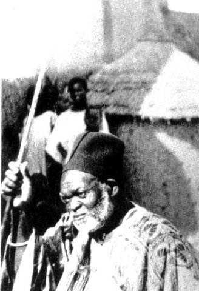
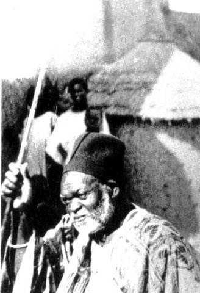
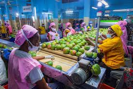
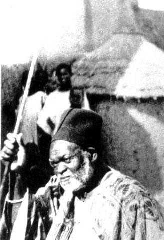

RESUME
- Historique
 
 - Agriculture

- culture et tradition
Bonjour et bienvenue sur notre page "SINEMATIALI VILLE ANCIENNE".
Ici vous trouverez tous sur la ville de sinematiali.
Nous vous donnons une ocasion unique de savoir d'abord comment la ville de sinematiali a été fondée, ensuite les riches agricole que cette ville regorge et enfin les richesses culturelles et traditionnelles de cette ville.
